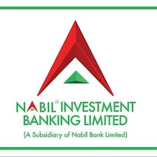

Sep 2021 - Aug 2025

Nabil Investment Banking Limited
Mutual Fund Operations Associate
Owned day-to-day fund accounting, regulatory reporting, and operational coordination for mutual fund schemes while supporting clients and internal stakeholders with timely, accurate information.
- Managed comprehensive accounting processes for mutual fund schemes covering approximately GBP 14.70 million in assets under management.
- Prepared four regulatory reports each quarter and used automation tools to improve report accuracy by 40% within the department.
- Introduced automated reporting solutions that reduced report preparation time by 50%.
- Resolved an average of 50 customer enquiries through online and on-site interaction, achieving an 80% satisfaction rate during the support period.
- Supported administrative operations including vendor communication, meeting scheduling, record management, and document filing, contributing to a 30% efficiency improvement.
- Promoted mutual fund investment schemes to 200 potential clients through physical marketing efforts, helping drive a 25% increase in engagement and enquiries.
- Produced annual financial reports for mutual funds, including balance sheets, income statements, and periodic performance reviews.